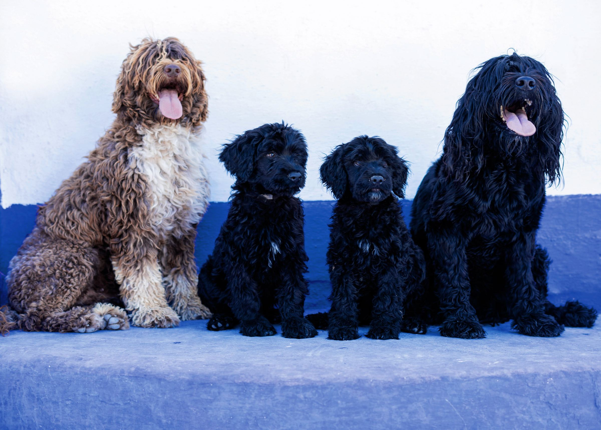

Nascidos para a água.
Nutridos com amor.
Cão de Água Português, criado em família em Lagos desde 1990.
Entrar na lista de esperaUma casa contada pelos seus cães
- 1990
Buba
A primeira. Ia connosco para todo o lado.
- Anos 90
Buba II
A matriarca que deu nome à casa.
- 2000
Caracóis e Linda
A primeira ninhada da casa.
- 2002
Petra
Uma das cadelas que marcaram a casa.
- c. 2006
Salva-vidas
Começa o treino de salvamento no mar.
- 2012
Oslo
Doze cães num fiorde norueguês.
- 2013
Da Noruega à Suíça
48 cães em três cidades, com a Linda e o Dylan a ensinar.
- Hoje
Petra Sarabi, Esterella e Dylan
E a ninhada de 2027 a caminho.
Cada um com o seu feitio

Petra Sarabi
Preta, encaracolada
Serena em casa, imparável na água.

Dylan
Castanho e branco, encaracolado
O primeiro a chegar à porta.

Esterella
Preta e branca, ondulada
Atenta a tudo, desconfiada de nada.

Noitte Di Fiaba
Castanha, ondulada
Olhos no horizonte, sempre.

Gigi
Castanha, encaracolada
A mais nova da casa.

Amora
Preta com peito branco
Pequena no tamanho, grande na água.
Feito para o mar
A primeira referência em Portugal é de 1297: um cão de pelo negro que trouxe do mar um marinheiro.
- Membranas entre os dedos
- Patas palmadas, de nadador nato.
- Mergulha a fôlego
- Fecha a glote e mantém os olhos abertos debaixo de água.
- Pelo sem subpelo
- Cresce sempre, sem muda. Ondulado ou encaracolado.
- Três níveis de alerta
- Rosna, eriça o pelo e só no fim age. Herdou a guarda dos barcos.
«Ganhavam tanto como os homens.»
Duas velocidades

Em casa: tranquilo, colado à família, onde as pessoas estão.

Na água: brincar é trabalho, e o trabalho é nadar, mergulhar e ir buscar.
A ninhada da primavera de 2027
Quem está na lista de espera recebe o diário, semana a semana.
- PlaneamentoEscolha dos pais e testes de saúde. Estamos aqui.
- AcasalamentoOs pais e a genealogia no diário.
- NascimentoPrimeiras fotografias, primeiros nomes.
- Primeiras semanasEm casa, com pessoas, sons e água.
- Para casaCom oito semanas ou mais.

São cães de emoção, são filhos, são família.Rodrigo Pinto

Cão Salva-Vidas
4 pessoas rebocadas de uma só vez, incluindo o nadador-salvador.
Treinamos em Lagos há cerca de quinze anos. Em Espanha e Itália já trabalha nas praias; em Portugal, ainda espera reconhecimento.
Apoiar o projeto